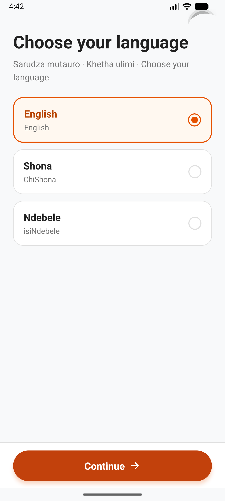
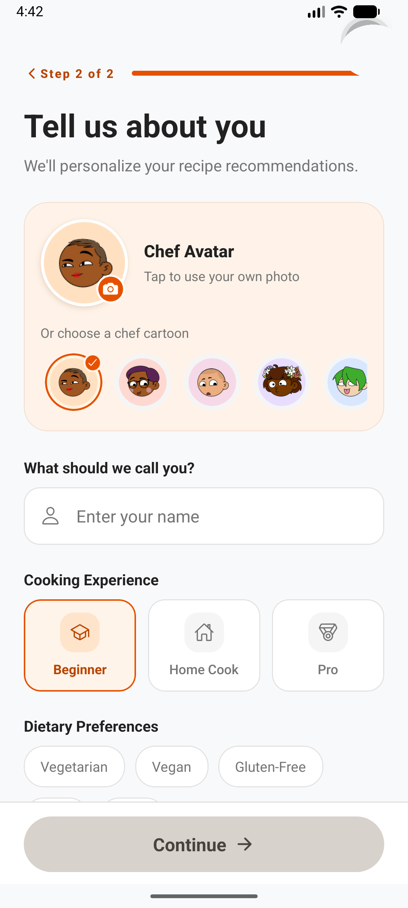
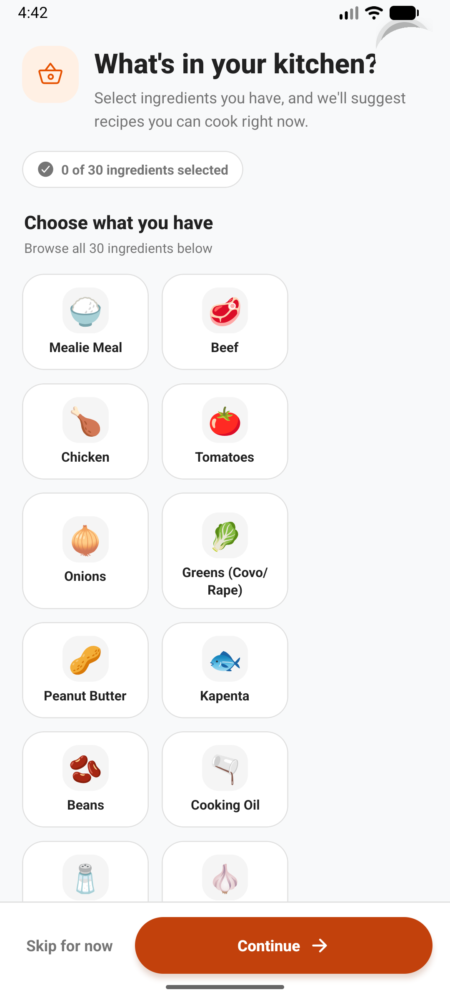
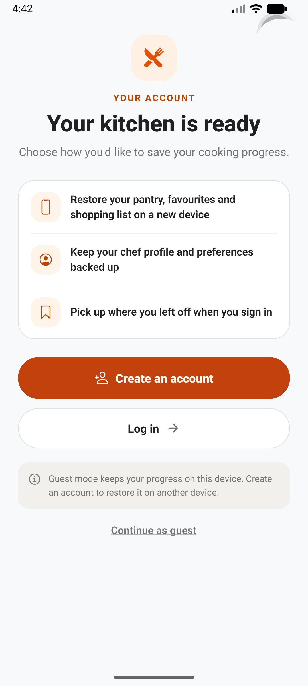

⌕
Discover recipes
Browse traditional recipes and find something delicious to cook.
 Zimbabwe Traditional Recipes
Zimbabwe Traditional RecipesFind traditional favourites, explore new dishes, and make the most of the ingredients already in your kitchen.
A welcoming kitchen companion for discovering Zimbabwean food and building confidence one meal at a time.
Browse traditional recipes and find something delicious to cook.
Choose the ingredients you have and explore matching meal ideas.
Get ingredient-based inspiration and recipe suggestions with AI assistance.
Save recipes, build shopping lists, and follow cooking steps as you go.
Choose English, ChiShona, or isiNdebele.
Use guest mode on this device or sign in to sync selected app data.
Captured from the Android emulator. The app starts with your language, gets to know your kitchen, then lets you choose how to save your progress.




Available on Google Play. Free to download.